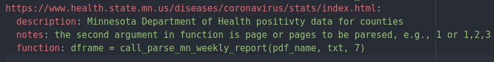
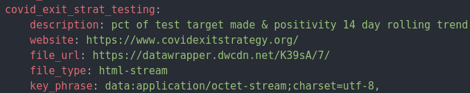
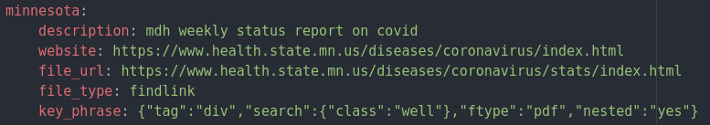
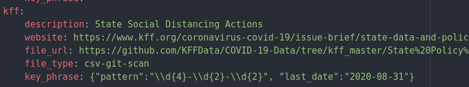
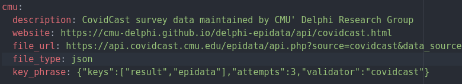

YAML files used by FileFetch¶
Note
Information below pertains to the filefetch package v. 0.0.1 (October 2020)
- FileFetch uses two different yaml files for providing the required parameters:
pdf_formatter.yml: required only when fetching PDFs.
params yaml file: used to provide parameters to FileFetch.
pdf_formatter.yml¶
The file pdf_formatter.yml is only required when the file to be fetched is a PDF file.
Warning
pdf_formatter.yml must be saved in your run directory to fetch a pdf.
When fetching a pdf, FileFetch assumes there is one or more tables that can be parsed from the pdf using the python package camelot and a specialized function(s) provided by the user.
- Therefore, there are several steps for getting a PDF using FileFetch:
pdf_formatter.yml needs to be saved in the directory from which you run your code.
A specialized function for processing, formatting, and storing the data in a pd.DataFrame needs to be added to utils.pdfx.py.
A caller function to call the specialized function is also required. The caller function is referenced in the pdf_formatter.yml and tells the FileFetch code which specialized function to access.
Sample pdf_formatter.yml¶
As of version 0.0.1, FileFetch comes with one specialized function for extracting a PDF table with COVID-19 data from the Minnesota Department of Health. The sample pdf_formatter.yml below is for this case.
General format is
- url_key:
description: information for user on what the url points to
notes: (optional) any additional notes to help the end-user
function: string to call caller function which in turn will call the specialized function for given pdf table(s)
For the Minnesota Department of Heath, this looks like:
{kind=link}
The url_key (e.g., www.health.state.mn.us/diseases/coronavirus/stats/index.html) should match the file url given as a parameter to FileFetch when you initialize (see information on creating a params yaml for more on this).
- The function should return a pandas DataFrame, therefore the format of the string provided to function should breakdown in to three parts:
variable name which will store the DataFrame
= sign
caller function (with correct arguments)
Warning
it is the user’s responsibility to add the caller function and specialized function to utils.pdfx.py.
Example caller function¶
The caller function is simple and only serves to allow the utils.pdfx.py master function parse_pdf() to execute the specialized function without knowing the name of the user’s function ahead of time.
call_my_pdf_function(pdf_name, pg_nums):
name = str(pdf_name) # name of pdf
pgs = str(pg_nums) # page numbers with tables to parse
df = my_pdf_function(name,pgs)
return df
Example specialized function¶
The specialized function may be simple or complex depending on the format of the table the user needs to extract from the PDF.
my_pdf_function(pdf_name, pgs):
# use Python package camelot to parse tables
tables = camelot.read_pdf(pdf_name, pages=pgs)
datatable = pd.DataFrame()
for t in tables:
whitespace = t.parsing_report["whitespace"]
if whitespace < 20:
ws = whitespace
datatable = t
dframe = datatable.df
return dframe
Tip
See this quickstart guide for information on using Camelot. There is also this discussion.
params yaml file¶
Using a yaml is one way to pass parameters to FileFetch. This is done in the following way:
yaml_file = ["url_list.yml", "unique_header_key"]
file = FileFetch(params_file=yaml_file)
The above example assumes your yaml file is named url_list.yml and is saved locally in your run directory. You will need to provide the full path if the yaml is saved elsewhere. More details on initialization can be found here.
The unique_header_key is taken from url_list.yml and is discussed more in the next section.
A real-world example using a params yaml is provided at the link.
Sample params yaml¶
General format is
- unique header key:
description: information on data being retrieved
website: (optional) parent website (for reference only)
file_url: url to file
file_type: e.g., csv, txt, html-stream
key_phrase: use for html-stream, findlink(s), csv-git-scan (leave blank otherwise)
As of FileFecth version 0.0.1, there are 5 file_type options. More information is here.
- file_type options:
csv: Fetch a standard csv file
html-stream: Largely used with DataWrapper where octet-stream;charset=utf-8
findlink: Search html for file link (retrieves csv, xlsx or pdf files)
findlinks: Same as findlink for multiple files on same page
csv-git-scan: Scan list of csvs on GitHub and download most recent
json: Fetch standard json
Examples for each file type are provided below.
Tip
Multiple fetch params can be stored in the same yaml. FileFetch uses the unique_header_key to identify which file block to read-in.
{kind=link}
Example html-stream fetch¶
{kind=link}
key_phrase specifies the this is data:application/octet-stream;charset=utf-8, When dealing with html-stream file_type copy and paste the phrase exactly as shown.
Example findlink fetch¶
{kind=link}
key_phrase is a dict that specifies the html tag and tag attributes you are searching for to identify the link.
- The dict keys are:
tag: main css tag to search for
search: additional tag and it’s attribute
ftype: (pdf, csv, xlsx) gives the file type
nested: (yes or no) indicates whether the tag and search keys identify the link directly or if you need to search for the link nested under them.
The Python package BeautifulSoup is used to find the link. References for more help understanding the tag and search values: [1] [2] [3].
{kind=link}
Example csv-git-scan fetch¶
{kind=link}
key_phrase is a dict identifying a pattern to search for to identify the latest file. The example above assumes the files contain the year-month-day in the file name. The file date is extracted from the file name using regex and then compared to the date provided by the user in last-date. If a file’s date is less recent then the last-date provided, it is not retrieved.
- The dict keys are:
pattern: regex pattern to extract date from file name. This date is compared to the last-date.
last-date: most recent date you have previously downloaded.
Example json fetch¶
{kind=link}
key_phrase is a dict. The keys are: “keys”, “attempts”, and “validator”. Supply 2 values for “keys”: one to check data is returned and one to retrieve data results list. If only 1 key is needed, you can supply the same key twice. In the Response Example figure below, result is the first str in “keys” since it provides the result code to verify data is returned and epidata is the second str in “keys” because it gives the list of results. Note: supplying the “keys” list requires knowing your json structure.
The second key in key_phrase is the number of tries to retrieve data before giving up. The final key is optional. If you have a data specific method to validate the data, provide the method name. Leave blank otherwise.
Note
To validate a new dataset, you must add a validator method to the MixIn class _validate.ValidateCheck.
{kind=link}
- The dict keys are:
keys: dictionary keys in json - used to make sure data is returned and extract the results list.
attempts: number of attempts at retrieving data before quitting.
validator: (optional) data validator method name in
_validate.ValidateCheck.